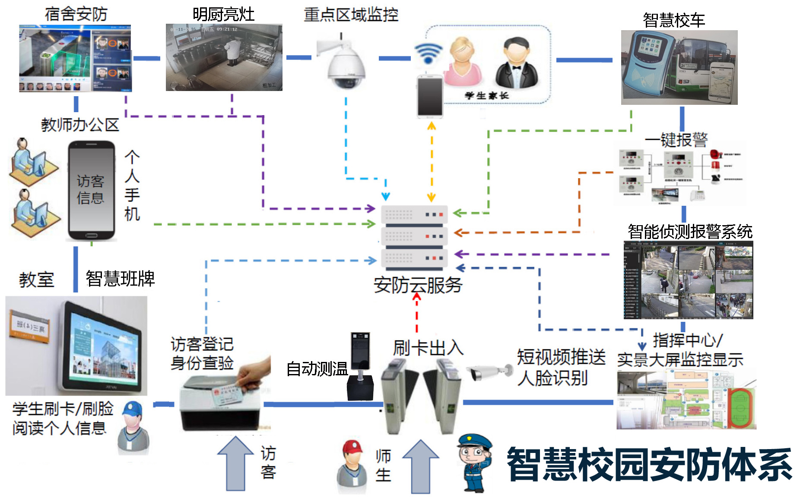
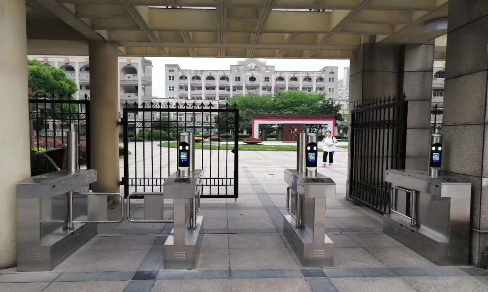
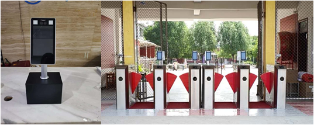
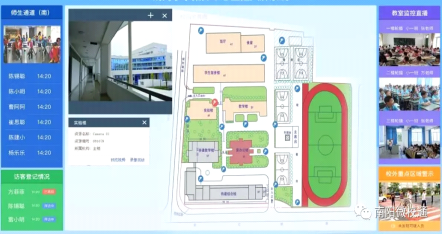
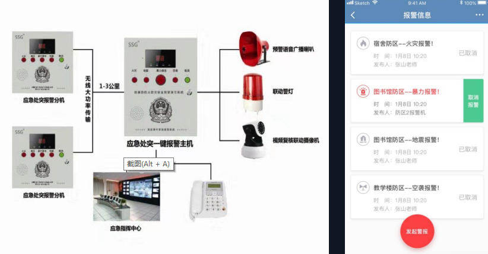
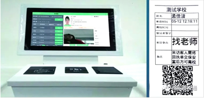
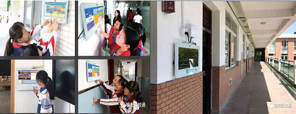
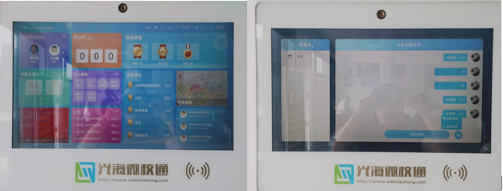

安全问题是人类发展的永恒主题。校园安全是教育教学的保障和基石，是学校建设、教育教学工作中永恒不变的主题。近几年来，随着教育事业的快速发展，学校安全管理工作变得更加繁重、复杂和多样化，学校周边及校内安全管理形势日趋严峻。为全面贯彻《新野县教育系统深化安全风险隐患双重预防体系建设实施方案》的通知精神（教体安字【2019】15号），切实把学校安全风险管控挺在隐患前面，把隐患排查治理挺在事故前面，提升学校物防、技防水平，消除校园安全隐患，优化我校教育教学环境，确保在校学生的人身安全，扎实做好我校新冠疫情防控工作，经充分论证，参照上港乡初级中学、施庵镇一初中等单位的成功经验，由校委会研究，决定安装由新野县光海科技有限公司免费提供的智慧校园安防设施。
光海教育是一家集教育信息化整体解决方案、产品研发、技术研究、教育服务和教育研究于一体的国家高新技术企业、是中国在线教育百强品牌，是河南省教育厅试点建设单位，是腾讯最大的战略开发合作伙伴，也是国内最大的基于微信的智慧校园服务提供商。
光海微校通提供五大智慧板块： 1、微门户/门户网站 2、智慧安防 3、智慧服务 4、智慧教学 5、智慧管理

门禁是校园安全的第一道保障，避免校外人员随意进入学校。将本校所有师生基本信息、照片提前录入闸机系统，只有闸机系统人员刷卡或者人脸识别后方能自由进出校园；学生通过刷卡和人脸识别，借助微信完成即时信息传输（以即时图片形式），学校管理者、班主任、家长这三方同时收到准确信息，家长即便在外地也能知道自己孩子已经到校或者离校，同时更明确的划分清楚了责任监管问题。

采用医疗级测温芯片进行手腕体温测定，精度高，速度快，配置华为AI芯片，满足各种复杂光线场景的动态识别。当老师和学生进入校门进行刷卡测温时，高清屏将显示测量温度，同时支持语音提示用户操作、播报测量温度，超出设定阈值发出警报声，并同步上传考勤和温度信息到用户手机端（以即时图片形式）.可配置在校园出入口安防闸机上，建立校园第一道防线，所有教职工、学生、家长均需通过检测，确认体温无异常方可入校。

微校通智慧安防体系，主要是围绕校园安全，以可视化地图为载体，利用最新的实物设备，物联网及大数据等核心技术构建一个多层次多功能反应迅速 信息共享的校园突发事件应急处理指挥体系，对校园监控设备统一管理，预防如校园欺凌等各类案件的发生，提升保卫业务应急能力。

根据国教督办〔2018〕4号”文 件，《关于进一步加强中小学（ 幼儿园）安全工作的紧急通知》 ，要求做好安全防范和隐患化解 前置工作。围绕学校安全定期组 织开展专项应急疏散演练。 平台可在一键报警设备、电子班 牌和手机端进行报警，同时可以点亮指挥中心进行预警。

是与公安系统联网，属于智慧安防的一部分。门卫是构建校园安全的第一道屏障，在发生安全事故的校园中，大多是保安大叔保安大爷在看校门，随意性很强，很难说会有不法分子混进校园对学校构成伤害，该设施是微校通智慧校园和智慧访客一体机组成。先进的人脸识别技术，与身份证进行对比，确保人证合一，降低校园安全风险。来访接待及时应答功能，来访信息在系统中登记之后，被访人员的手机自动弹出请求应答，智能识别外来人员，微信提醒被访人员，同意后来访人员才能进入。

智慧班牌是集教学、管理、智慧服务于一体，构建家校互动，留守儿童可通过智慧班牌视频功能，随时跟外地父母取得联系。

1.每天自动更新时间、日期和温度。
2.新闻资讯和通告 学校可以选一些适合学生阅读的新闻资讯上传，学生在课余时间查阅的同时，也丰富了校园生活。学校发布的公告会第一时间在这里提示未读消息，避免了传统手工板报知晓遗漏的问题。支持发布内容推送给老师和家长，并显示已读提示。
3. 班级人员构成情况，班主任老师、班干部、班级人员分布一目了然。
4. 班级荣誉 五项评比 比如咱们班被评为先进班集体等等，在标准模式上显示，全校师生都可以看的到。
5.课程表 学生随时查阅本周课程，以便提前做好上课准备，家长也可以通过手机查询当天孩子上了什么课，老师在因故需要调换课程时可以提前更改课程表。
6.班级相册 班级相册相当于一个班级圈，是连接家校互动沟通的纽带。老师在平时学习或活动中拍下学生照片上传到相册，家长也可以上传孩子课外的精彩瞬间上传到班级圈，学校家长和用户之间可以点赞评论留言进行互动，学校有权限删除留言对用户实行权限设置（可对谁看，可屏蔽谁）支持图文、视频（支持200m以内视频）、音频等。
7.家长消息 班牌里面最先进最受学校和家长推崇的一个设置，只需刷卡就可实现学生与家长一对一、老师与家长一对一或一对多互相交流的问题，学生通过语音和家长进行交流，家长也可以在手机端发语音至班牌上给孩子留言（支持语音通话和视频通话），并且这个对话第三方是看不到的，学生本人刷卡显示自己家长信息，隐私受保护。通过家长消息功能，第一解决了学生带手机入校这个学校和家长都很头疼的问题，也避免了微信家长群家长言论不可控、重要信息遗失等弊端。下图为示例图：

8.新高考选排课 : 家长通过手机端为学生选课。支持"6选3或者3+1+2"模式 。走班比较灵活，不管是全走班， 还是部分走班都适用。 根据学校设置的条件，系统自动排课。每个教室一张课表，每个教师一张课表，每个学生一张课表。学校的普通排课，适应各种模式下的行政班排课。
9.缴费管理：可以自定义设置学校收费项目和 明细组成。并且可以针对不同班 级和个人灵活设置缴费费率。可 以设置缴费截止时间时间，并机 械能自动催费，并支持实现财务 报表智能汇总。 缴费通过微信支付直达学校账户， 避免人工计算疏漏和繁琐的工作量。
10.在线作业：老师通过pc或手机微信布置---作业按班级、科目推送给学生家长手机---教师收到作业提交通知。可查询已交作业、未交作业学生明细并提醒----学生线下完成作业，家长检查后反馈给老师----老师可通过手机直接批改作业，显示真实笔迹，支持多种模式。
11.考勤模式：老师在即将上课前通过班牌就可以对学生的入室情况一目了然，应到人数、实到人数、请假、迟到精准显示，还有一个就是关于学校和家长的一个责任监管划分问题。真实案例：新野某学校一名学生，在周日返校时间，老师没发现该生座位是空着的，事实情况是该生在家里喝农药了，家长到学校问责学校为什么没及时发现孩子没到校，指责学校监管不力，而学校呢也确实有责任，最后学校花钱才了结这件事，如果有了这些安防设施，学生通过门禁系统家长和学校收到信息知道学生出入校了，通过班牌家长知道孩子进教室了，通过安全宿舍学校和家长知道孩子入寝消息，这样就划分清楚监管责任，大数据存储做到有据可查。
12.通知模式：学校下发通知公告等，精准推送给家长和老师， 支持图片、文字、音频、视频等形式。
13.上课模式:上课时间班牌自动进入上课模式 ，显示当前所上课程、节次、任课老师、时长、上课内容等，学校也可观看到老师上课状态，家长也可以观看现场讲课，对外权限学校可关闭。教案示例：学校可准备一堂精品课对家长开放，第一、家长肯定了学校的教学质量，二来通过家长口碑相传，对学校是一个很好的宣传。
14.考试模式:当所对应教室正在考试时，班牌自动显示该教室的考试信息，包括:考试1科目、考试教室、考试时间、监考老师等信息。
15.平台私信：允许家长与老师，老师与老师点对点、一对多发送信息，支持文字、图片、语音等形式。规避微信家长群家长言论不可控、重要信息遗漏等缺点。
16.在线组卷：老师通过手机端设置难度、题型、数量、总分等从题库中选择各类题目，自动生成试卷，直接打印，不用老师再手写操作。从班牌考勤，班级管理，线上组卷批改试题直至更便捷的处理家长微信群等，很大程度上减轻了学校和老师的工作量。
17.在线缴费（催缴）·开学报道那天，学生、家长先去找宿舍，再在墙上一张张找学生分在哪班，往往这个时候，校内的场面就像在打仗，现在我们通过微校通，在报道之前，家长微信都会收到入校信息，包括学生名字、年级、班级、班主任老师、宿舍位置、生活老师名字等都会提前通知到家长手机端，同时支持在线招生缴费，这样一来，家长得到便捷，也提高了学校办事效率，更赢得家长对学校先进管理模式的满意和好评。
18.在线资源：上万资源全部免费点播，国学、诗歌、音乐、名著、英语、中外故事、跟读收听和老师课程直播等等应有尽有，避免了家长需要下载各种APP和付费点播的繁琐。
19.校园营养食谱：在校内硬件设施上，学生在校的先决条件就是吃饭和住宿，家长可通过手机查看学校当天的营养食谱，也可以选择校内摄像头观看孩子用餐状况，学校有权限可选择不对用户开放此摄像头。
20.在线云盘：云盘，旨在为校方老师个人文件存 储、文件共享提供工作上的便利， 营造一个集个人存储空间、公共共 享空间于一体的云盘空间。 云盘，一方面老师有独立私密的个人空间；另一方面，老师间又有 一个共同的共享空间，老师间也可以创建几个老师间或者部门间的独立共享空间，为部门间、老师间沟通、共享文件提供便利.
21.微课学习：“微课”是指按照新课程标准及教学实践要求，以视频为主要载体 ，记录教师围绕某个知识点（重点难点疑点）或教学环节而开展的精彩教与学活动的全过程。 教师将授课过程、日常的兴趣课等课程拍成视频，关联相关知识点，汇同其它教学资源上传平台形成微课资源库，可以供学生在家学习，并对资源和学习情况进行评论。
根据2018年教育部印发《教育信息化2.0行动计划》的通知，要求数字校园建设覆盖全体学校，构建信息化教育体系是学校未来发展方向的必然趋势。
2019年8月28号李克强主持召开的国务院常务会议决定，推进‘互联网＋教育，’加快建设教育专网，到2022年实现所有学校接入互联网，到2023年实现智慧校园全面覆盖。
学校未来的发展就是一个互联网＋的一个时代，光海教育就是利用互联网大数据做为核心技术，借助微信公众号更好的服务于学校和家长。
1、所有硬件设施全部免费给学校安装使用，其都是通过互联网＋教育，给学校提供智能管理，降低劳动量，提高效率。
2、利用班牌，通过家校互动，把校园文化做到丰富多彩，让家长了解老师，让老师了解学生家庭，提高学生学习兴趣。
3、最核心的是智慧教育：云演播教室。通过这个系统，提高学生成绩。让家长、学生、学校三方都满意。
此申请，请批准
城区东关小学校
2021年1月5日